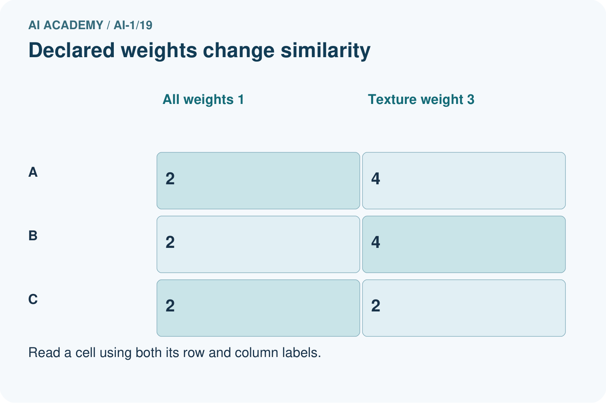
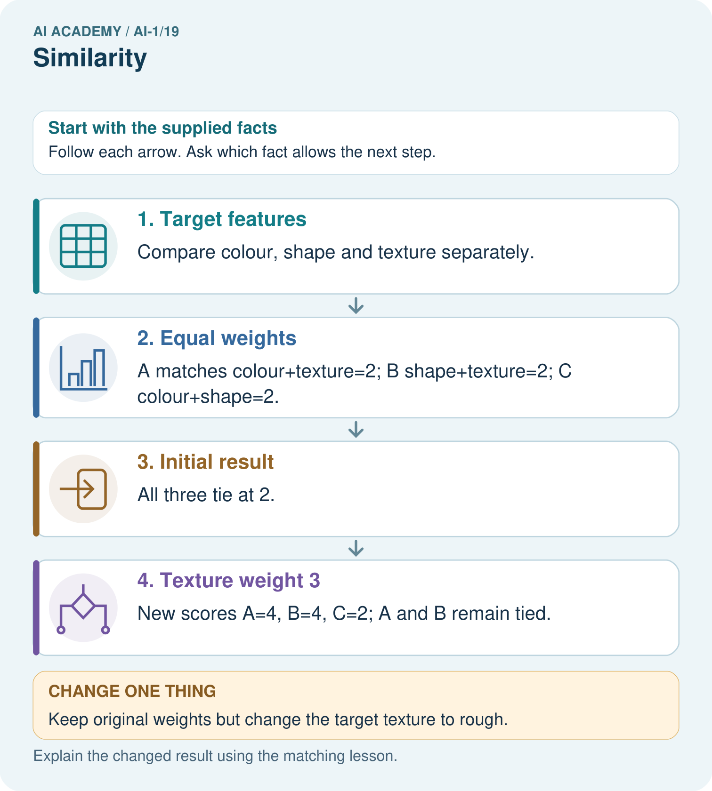
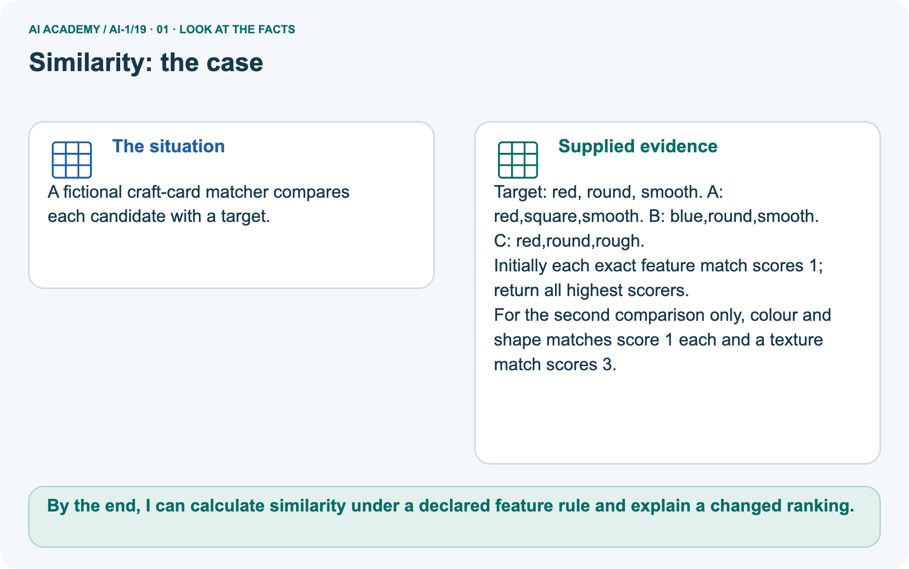
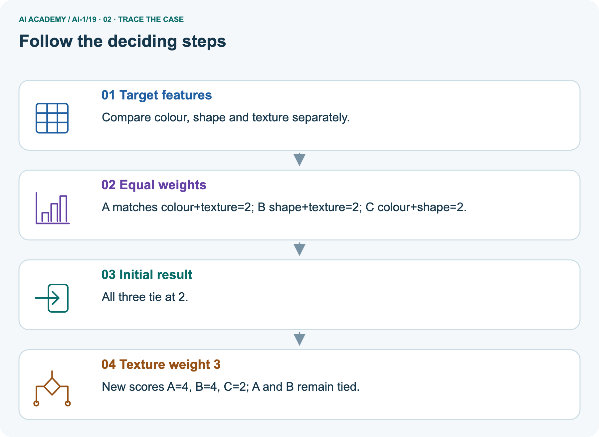
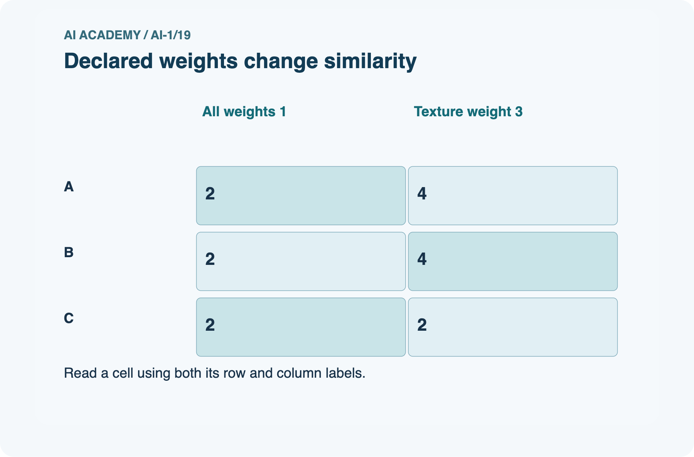
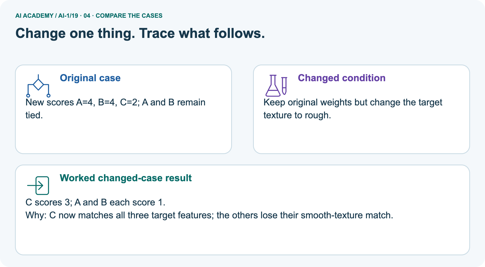
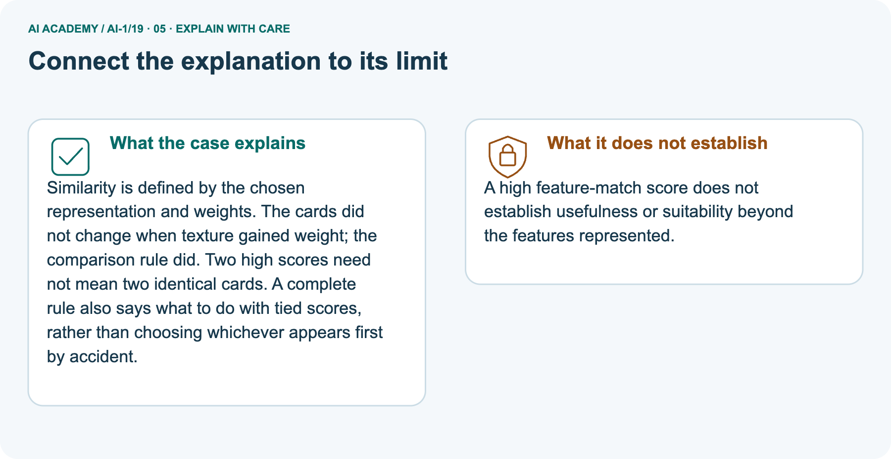
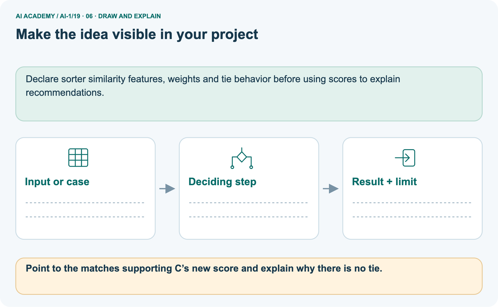

AI Academy · Level 1 · Grade 6 · Week 19 · Teacher guide
Similarity
Learn to understand, design, build, test and explain AI systems responsibly.
Project: Helpful Classroom Sorter
Teacher guide · 1 of 9
Similarity
Prepare Similarity: check the target, prerequisites, resources and adaptable teaching schedule.
Teach the learning cycle
Primary target: Calculate similarity using explicitly selected features and a stated scoring rule
| Session | Sequence and minutes | Resources |
|---|---|---|
| Session 1 · Understand · 45 min | 0–7: recall and prerequisite; 7–15: inspect the concrete case and predict; 15–30: teacher models the worked trace; 30–40: learners explain a step using the text and visual; 40–45: check the core idea. | Use Your mission, Notice the evidence, See how it works, Compare the cases, Words that unlock the idea and Follow a worked example; record the brief recall in the workbook. |
| Session 2 · Practise · 45 min | 0–5: retrieve the procedure; 5–15: W2 completion practice; 15–23: explain and check with a partner; 23–30: each learner answers the misconception check; 30–40: targeted reteaching or a harder variation; 40–45: prepare the investigation. | Use Find and repair a mistake, Practise together, Run the investigation and Build your understanding; use the matching workbook W2 and misconception check. |
| Session 3 · Investigate and transfer · 45 min | 0–5: retrieve the decision rule; 5–20: investigate or trace; 20–30: start the independent case; 30–38: connect the project; 38–43: act on feedback; 43–45: plan the return check. | Use Run the investigation, Connect your project, Show what you know, Study a complete case and Try a new case independently. Allow extra time for the full task set. Use a coding lab only when this week actually provides one; Your lesson route is the planning section. |
This is a starting allocation of 135 minutes, not a validated duration. Preserve all named topics. Schedule extra time for connected examples, the full investigation, independent cases and project building.
Repeated copies of a case share one recorded attempt; they are not new evidence.
Retrieval answer guidance
Confidence Is Not Correctness
Without opening the old lesson, explain one key idea from Confidence Is Not Correctness. Give an example and a mistake that the idea helps you avoid.
Look for: Distinguish a confidence claim from evidence that a prediction was correct
Reference example, not the only acceptable wording: The learner replaced the documented score meaning with a probability interpretation. Report 80 of 100 feature-match points.
To claim a chance of correctness, a defined probability method and relevant outcome evaluation would be needed.
Boundaries and 'Not Sure'
Without opening the old lesson, explain one key idea from Boundaries and 'Not Sure'. Give an example and a mistake that the idea helps you avoid.
Look for: Identify a specific source of uncertainty and explain how it affects a prediction
Reference example, not the only acceptable wording: The rule and two stated possibilities are known; the actual height is unresolved. At 5 predict short, at 6 predict tall. Inspect the original readable record or remeasure.
Repeating a calculation supplies no new information about which height was recorded.
Learning from Examples
Without opening the old lesson, explain one key idea from Learning from Examples. Give an example and a mistake that the idea helps you avoid.
Look for: Fit a threshold by tracing predictions and counting disagreements for every candidate
Reference example, not the only acceptable wording: Threshold 3 predicts short, tall, tall, tall, disagreeing only at 4 cm: count 1. Threshold 7 predicts short, short, short, tall, disagreeing only at 6 cm: count 1.
Reset the tally for each candidate.
Use the student module and workbook section with this exact week title. The worked case, independent question and answers below form one aligned lesson sequence.
What the learner must demonstrate
A reader wants mystery and short books. A has both traits, B only mystery, C only short. Score one point per matching trait. The reader now says short is essential. Explain how the decision should change.
Concept to explain
Recommendations often begin by comparing selected traits, not whole objects.
| Term | Meaning |
|---|---|
| similarity | degree of likeness under chosen traits |
| distance | numeric or ordered difference between representations |
| weight | importance assigned to a feature |
| nearest neighbor | item with smallest chosen distance |
Prepare the class
Use the supplied scenario, student illustrations and blank paper. For numeric work, offer counters or a calculator after learners show the setup. Fictional records are supplied; personal data and paid accounts are unnecessary.
Alternative compact allocation
This compact option is not the full-week schedule. Use the main teaching cycle and allow extra sessions for the investigation, independent work and project.
Allow 80 minutes: recall 8; explanation 12; worked demonstration 15; guided practice 20; independent assessment 15; project and reflection 10. Extend the lab into a second session when needed.
Preparation for the connected explanation
Treat similarity as a defined computation with a purpose. This week uses exact category matching and whole-number weights, avoiding formal distance geometry. Keep ranking, probability and eligibility distinct.
Students should be able to explain changes in results from the feature contributions rather than memorise a winning item.
Readiness answer
No. Read the score definition and selected features. Matching-feature points describe a comparison rule, not a probability of suitability.
Target and candidate card records from the lesson, with D and incomplete E added later
Counters for colour, shape and texture contributions
Book records J, K and L from W4 with feature headings
End goal for the pictorial case
By the end, I can calculate similarity under a declared feature rule and explain a changed ranking.
This added worked case illustrates the week’s main idea. Retain all original and connected topics; schedule its practice within the teaching cycle.
Teacher guide · 2 of 9
Explain the mechanism
Model Similarity using the supplied case, labelled mechanism and reasoning. Make the scope of each conclusion explicit.
Follow the information instead of imagining magic inside the machine.
1. Input — information entering
INPUT represented traits for candidate items
2. Process — the deciding step
PROCESS compare distances using selected features
3. Output — the result
OUTPUT nearest or most similar items
Key idea
CORE IDEA Recommendations often begin by comparing selected traits, not whole objects.
How the mechanism works
UNDER THE HOOD Similarity is a designed measure over represented features. Distance changes with feature selection, scaling, weighting, and missing values. Nearest does not mean identical, best, or fair.
Draw a fresh example with all three stages:
Every step connects a claim to observable evidence.
The case to investigate
CASE A book can be nearest to another by reading level, topic, length, or mood; the chosen features and scales determine the neighbor.
Step 1
STEP 1 — OBSERVE represented traits for candidate items
Step 2
STEP 2 — TRACE compare distances using selected features
Step 3
STEP 3 — CONCLUDE nearest or most similar items
Model answer
MODEL REASONING Plot items consistently, define how each axis is measured, and compare distances. A different axis or weight can change the nearest item without any item moving in the real world.
A claim to avoid
DO NOT OVERCLAIM Similarity is a tool designed for a purpose, not a universal property.
What new evidence could change this answer?
Concrete teaching case
The teaching case
Book A has animals and adventure; B has animals only; C has neither. A reader wants both traits.
The teaching case
Rank by number of matching traits.
Exact explanation to model
Why the result follows
A scores 2, B 1, C 0. Ranking depends on the chosen traits; it is not a universal measure of book quality.
Explain the added worked example
Explain the added worked example · 1
Two objects can be alike in colour and different in shape. A computer comparison needs a precise answer to similar in what way. Select features, state how their values are compared, and define what a larger score means.
The result belongs to that rule; it is not a universal judgment about the objects.
Explain the added worked example · 2
Our target card is red, round and smooth. Three candidate cards are A: red, round, rough; B: blue, square, smooth; C: red, square, rough.
First give one point for each feature that exactly matches the target and zero for each known mismatch. Add the points. Colour, shape and texture are the only selected features.
This paper exercise uses complete category values with agreed spelling. Real records can be missing or uncertain. Do not silently treat an unknown texture as a known mismatch or copy a value from the target.
First identify whether the information supports the comparison.
A receives 1 for colour, 1 for shape and 0 for texture: total 2. B receives 0, 0 and 1: total 1. C receives 1, 0 and 0: total 1. Record the contributions, not just the totals, so another learner can check the computation.
A is most similar among these three candidates under this rule. That sentence names the candidate set and the rule.
It does not say A is identical to the target, has the right texture or will be the best choice for a task that needs smooth material.
Key terms
| Term | Meaning |
|---|---|
| Similarity | Closeness under a stated choice of features and comparison rule |
| Feature match | Agreement between two recorded values for a selected feature |
| Weight | The number of points assigned to a feature match in this scoring rule |
| Tie | Two or more candidates sharing the same score |
| Candidate | An item being considered in a comparison |
Model the reasoning aloud
Use the complete worked example below before asking learners to complete W2. Reveal a small part, invite a prediction, then explain the deciding step.
These teacher notes contain solutions; do not reveal the independent case answer during modelling.
| Candidate | Colour and shape points | Texture worth 3 points | New total |
|---|---|---|---|
| A | 1 + 1 | 0 | 2 |
| B | 0 + 0 | 3 | 3 |
| C | 1 + 0 | 0 | 1 |
Model the reasoning aloud · 3
Suppose texture matters more for the stated comparison. Keep colour and shape worth one point each, but give three points for a texture match. B now scores 3 and becomes the unique highest scoring candidate.
No card changed; the rule changed. Record both versions rather than overwriting the first result.
Model the reasoning aloud · 4
Weights express priorities in this designed rule. They need a reason connected to the task and should be set before inspecting the final evaluation results. A convenient winner does not justify a weight.
If smooth texture is required without exception, use a requirement check rather than hoping a weighted score will always enforce it.
| Thinking move | Teacher prompt |
|---|---|
| Plan | What is given? What is the question? Which procedure fits these facts? |
| Do | Point to each input and intermediate step in the worked trace. Name the rule that allows the next step. |
| Check | Does the output answer the question? Which assumption or limitation prevents a larger claim? |
Use the diagram and verbal explanation together. Ask learners to match a sentence to a specific visual step; do not assign learners fixed visual or auditory learning styles.
A pictorial worked case: Similarity
A fictional craft-card matcher compares each candidate with a target.
The facts we will use
Supplied facts
Target: red, round, smooth. A: red,square,smooth. B: blue,round,smooth. C: red,round,rough.
Supplied facts
Initially each exact feature match scores 1; return all highest scorers.
Supplied facts
For the second comparison only, colour and shape matches score 1 each and a texture match scores 3.


Read the picture one step at a time
Why this result follows
Why the result follows
Similarity is defined by the chosen representation and weights. The cards did not change when texture gained weight; the comparison rule did. Two high scores need not mean two identical cards.
A complete rule also says what to do with tied scores, rather than choosing whichever appears first by accident.
What this example does not establish
Keep the stated limit
A high feature-match score does not establish usefulness or suitability beyond the features represented.
Change one thing in the pictured case
Change one thing
Change: Keep original weights but change the target texture to rough.
Predicted result
Prediction: C scores 3; A and B each score 1.
Why the result follows
Reason: C now matches all three target features; the others lose their smooth-texture match.
Ask while showing the picture
Ask while showing the picture · 5
Cover the result. Ask learners to name the inputs and predict the next step. Uncover one step, connect the icon to the actual procedure, and explain its evidence. Then change the supplied condition and compare.
The picture is a representation; it does not document execution of a real AI model.
Teacher guide · 3 of 9
Demonstrate and guide practice
Demonstrate Similarity, reduce support deliberately and check individual reasoning before discussing answers.
Board sequence
1. Put the facts on the board
Write the given facts: Book A has animals and adventure; B has animals only; C has neither. A reader wants both traits.
2. State the decision to explain
Write the question to explain: Rank by number of matching traits.
3. Reveal the worked reasoning
Reveal after predictions: A scores 2, B 1, C 0. Ranking depends on the chosen traits; it is not a universal measure of book quality.
Hold back the independent task
Keep for an independent attempt: Compare books using topic only. Book A is about space with a red cover; B is about space with a blue cover; C is about dogs with a red cover. Which matches A best?
Classroom dialogue
Ask the class
Ask: Which facts are given, and which would we have to assume? Learners mark relevant details before discussing answers.
Language to model
Say: Predict first. Show the rule, information path or calculation that would produce the result. A correct guess is not yet an explanation.
Reveal reasoning one step at a time. Explain why a tempting alternative fails. Write units and denominators for arithmetic, trace conditions for decisions, and identify supporting sources for claims.
In pairs, one learner solves while the other checks evidence; exchange roles. Remove the worked answer before independent assessment.
Model these guided questions
Original totals A 2, B 1, C 1, D 2, so return A and D. With texture worth 3: A 2, B 3, C 1, D 4, so return D. D combines shape and texture. Scores count weighted matches, not observed chances of suitability.
Exit: the winner depends on weights and candidate set; A’s first result is not a universal fact.
Case-specific teaching sequence
| Stage | Teacher action |
|---|---|
| Session 1 start 0 to 7 minutes | Retrieve why a point score is not automatically a probability. |
| 7 to 20 minutes | Trace the three diagram rows with one counter per match. State the target and candidates aloud. |
| 20 to 33 minutes | Complete W1 and W2. Change only the texture weight and compare the two recorded results. |
| 33 to 45 minutes | Use W3 to distinguish a missing value from a known mismatch. Require a recorded pause under the classroom policy. |
| Session 2 start 0 to 8 minutes | Retrieve the scoring rule and why it depends on selected features. |
| 8 to 23 minutes | Introduce D and complete the guided task. Return all tied maximum scores and explain the weighted result. |
| 23 to 38 minutes | Collect W4 independently. Look for all ties and the distinction between similarity and a required language. |
| 38 to 45 minutes | Discuss W5 and the exit. End with the need to document feature choices and effective weights. |
Reduce help deliberately
Completion practice
Completion task: Keep the same target and candidates but make texture worth 3 points, with colour and shape worth 1 each. Recalculate A, B and C. Explain what changed and what stayed the same.
Reasoning to listen for
Teacher check: A stays at 2, B becomes 3 and C stays at 1, so B wins. Only the texture weight changed; candidate values, target and other weights stayed the same. The result is specific to this new comparison rule.
Start by identifying the given inputs together. Leave the intermediate steps blank. If needed, model one step, then withdraw that help on the next step. Move to a full trace only when the partial trace is understood.
For partners, alternate explainer and checker; collect a response from every learner before discussion.
Individual reasoning check
Use the worked case for Similarity and selected features. Proposed explanation: “Similar has one objective meaning for every task”. Decide whether this explanation is supported.
Point to the step or supplied fact that decides; explain your repair if needed.
Expected repair
Expected correction: Name the features, comparison rule and purpose.
Collect explanations, not only yes/no votes. If a misunderstanding is common, re-model the relevant step for the class.
If it affects a few learners, give a short targeted group explanation while others solve a more demanding variation.
Pictorial practice question
Point to the matches supporting C’s new score and explain why there is no tie.
Reasoned teacher answer
C matches red, round and rough: 3. A matches only red and B only round: 1 each.
Changed-case reasoning: C scores 3; A and B each score 1. C now matches all three target features; the others lose their smooth-texture match.
Collect each learner’s explanation before discussion. Use the first missing connection between input, deciding step and result to choose support. This question is worked-case practice, not fresh mastery evidence.
Teacher guide · 4 of 9
Run the weekly evidence lab
Run the Similarity investigation and use the first unsupported step to choose a teaching response.
Predict first, test honestly, and explain what the evidence means.
1. Predict
State your prediction before the result is known.
2. Investigate
Complete the task: Create a trait map and find two different 'nearest' items.
3. Compare cases
Keep a normal case and an edge case clearly separated.
4. Record honestly
Record what happened—even when it does not match your prediction.
5. Explain and plan the next test
Explain the result, one limitation, and the next useful test.
Use a fresh case after support
INDEPENDENCE After support is removed, repeat the proof with a fresh case.
Make the lab runnable
Use the concrete case as the shared normal case and the independent question as a second case. Each pair creates a boundary or missing-information case and predicts its result before testing.
Keep the expected result separate from an observed mistake.
| Record | What to capture |
|---|---|
| Input or evidence | Exact data, instruction or claim |
| Expected result | Answer or safe fallback declared before the run |
| Observed result | Actual result, including errors |
| Explanation | Rule, calculation or evidence explaining the outcome |
| Next test | One justified change and a new prediction |
Diagnose and reteach
Find the unsupported claim
CLAIM TO REPAIR Two objects have one universal similarity score.
For guessing, return to given facts and request a trace. For vocabulary without application, use one example and one non-example. For arithmetic errors, check the setup before the calculation.
Finish with a different uncoached case before recording mastery.
Address these additional misconceptions
Similar has one objective meaning for every task: Name the features, comparison rule and purpose.
The highest score proves all requirements are met: Check mandatory requirements separately.
Equal scores can be resolved by whichever row appears first: Use the stated tie policy; here return all highest scorers.
Missing texture deserves zero as if it were rough: Retain an unknown and apply the stated missing-value policy.
Match the support to the first error
| What the response shows | Next teaching action |
|---|---|
| Missing or misread facts | Read the case aloud, mark supplied versus unknown facts, and let the learner restate it. |
| Wrong procedure | Return to the deciding step in the worked case. Contrast it with the proposed incorrect explanation. |
| Arithmetic or implementation error | Trace intermediate values or lines; preserve the first mismatch and retry that step. |
| Correct result without a reason | Ask for a trace and a changed case before marking independent understanding. |
| An unsupported wider claim | Ask which supplied evidence supports the claim and which further observation would be needed. |
Offer an oral explanation, drawing, enlarged visual or fewer examples when that removes a reading/writing barrier. Keep the same reasoning goal.
Stretch secure learners by changing a boundary or assumption and asking them to defend the effect, not simply by assigning more of the same questions.
Teacher guide · 5 of 9
Assess and explain the answers
Use the Similarity questions, teacher keys and criteria after the relevant attempts. Previously discussed cases are practice; protect the separately selected independent task.
Worked case answer
Teacher key · Worked case answer
A scores 2, B 1, C 0. Ranking depends on the chosen traits; it is not a universal measure of book quality.
Independent question
Independent question · withhold the key
Compare books using topic only. Book A is about space with a red cover; B is about space with a blue cover; C is about dogs with a red cover. Which matches A best?
Expected independent answer
Teacher key · Expected independent answer
B matches A by topic. C shares cover colour, but colour was not the chosen comparison trait. Similarity depends on what we choose to compare.
What counts as evidence
| Criterion | 0 points | 1 point | 2 points |
|---|---|---|---|
| Result | Incorrect or absent | Partly correct | Correct with necessary conditions |
| Reasoning | No supporting trace | Some steps | Clear mechanism, calculation or source support |
| Limit | Overclaims certainty | Vague limitation | Relevant uncertainty or missing fact |
| Transfer | Copies without adapting | Adapts with prompts | Solves a changed case independently |
Use 6/8 as a classroom checkpoint, with 2 required for both Result and Reasoning. This is a proposed teaching rule, not a validated certification threshold.
Do not count a coached answer as independent mastery; correct unsafe or unsupported claims regardless of total.
Feedback
Ask the learner to find the evidence that challenges this claim: “Two objects have one universal similarity score.” Keep the first attempt and an uncoached retry separate.
Original transfer answer
Teacher key · Original transfer answer
Initial scores are A=2, B=1, C=1. With short essential, exclude B; A remains preferred to C if mystery still matters.
Similarity scores encode selected preferences; they do not establish universal quality or guarantee enjoyment.
Explanations for the additional workbook examples
W1 Show the contributions before the total
Workbook question · W1
For the red round smooth target and candidates A, B and C in the lesson, record the colour, shape and texture contributions under one point per match. Give each total and identify every highest scoring candidate.
Teacher reasoning · W1
A: 1, 1, 0 gives 2. B: 0, 0, 1 gives 1. C: 1, 0, 0 gives 1. A is the only highest scoring candidate among A, B and C under equal weights.
W2 Explain a changed winner
Workbook question · W2
Keep the same target and candidates but make texture worth 3 points, with colour and shape worth 1 each. Recalculate A, B and C. Explain what changed and what stayed the same.
Teacher reasoning · W2
A stays at 2, B becomes 3 and C stays at 1, so B wins. Only the texture weight changed; candidate values, target and other weights stayed the same. The result is specific to this new comparison rule.
W3 Keep unknown separate from different
Workbook question · W3
Candidate E is red and round but its texture is missing. A learner assigns zero for texture and declares E fully scored. Apply our classroom policy.
State the known contributions, the missing information and what must happen before a final ranking.
Teacher reasoning · W3
Colour and shape contribute 1 each, giving a known subtotal of 2 under the original rule. Texture is unknown, not a known mismatch.
Pause the final ranking, request E’s texture, and record the unresolved feature if it cannot be obtained.
W4 Transfer the comparison to books
Workbook question · W4
A target book has topic space, format comic and language English. Candidates are J: space, prose, English; K: animals, comic, English; L: space, comic, Spanish. Give 1 point per exact match and return all tied highest scorers.
Then make topic worth 3 points while keeping the other weights at 1. Report both sets of totals and winners. Explain why a winner may still fail a requirement to read English.
Teacher reasoning · W4
Equal weights: J 2, K 2, L 2; all three tie. Topic weighted 3: J 4, K 2, L 4; J and L tie. L remains a highest scorer despite Spanish language, so weighted similarity does not enforce the English requirement.
Check language eligibility separately if English is required.
W5 Notice an accidental extra weight
Workbook question · W5
A designer adds a second colour column that copies the first and gives both columns one point. They say no feature has been given extra importance because every column has equal weight.
Explain the problem and propose a clearer rule.
Teacher reasoning · W5
Colour now contributes twice for one underlying match, so it has effective weight 2 while other features have weight 1. Remove the duplicate or state and justify colour’s weight explicitly.
Equal column weights do not guarantee equal importance for the underlying features.
Assess independent transfer
Independent question · withhold the key
Selected case: A target book has topic space, format comic and language English. Candidates are J: space, prose, English; K: animals, comic, English; L: space, comic, Spanish.
Give 1 point per exact match and return all tied highest scorers. Then make topic worth 3 points while keeping the other weights at 1. Report both sets of totals and winners.
Explain why a winner may still fail a requirement to read English.
Selected case answer
Teacher key · Selected case answer
Equal weights: J 2, K 2, L 2; all three tie. Topic weighted 3: J 4, K 2, L 4; J and L tie. L remains a highest scorer despite Spanish language, so weighted similarity does not enforce the English requirement.
Check language eligibility separately if English is required.
| Dimension | Evidence required |
|---|---|
| Explanation | Names the applicable idea or procedure and ties it to the supplied facts. |
| Trace and result | Preserves the given inputs and shows the relevant intermediate steps; distinguishes a prediction from an observed execution. |
| Limits | States the assumptions, missing evidence or conditions under which the result would change. |
Teacher key · Selected case answer
Record each dimension as not yet, with support, or independent. Accept a valid alternative procedure with a defensible trace.
Do not penalise an honestly recorded model failure if the learner correctly explains its evidence and limits.
Feedback that the learner uses
Name the earliest unsupported step and give one action to repair it. Have the learner make that repair now and explain why. Then assess the relevant skill on a fresh, fully specified case.
Confirm it was not previously practised with feedback; solve and check the new case before assigning it. A follow-up design prompt is a starting brief, not automatically an equivalent test.
Teacher guide · 6 of 9
Connect and extend learning
Connect Similarity to Helpful Classroom Sorter, adapt support and plan a later changed-case check.
Helpful Classroom Sorter
Choose two useful item traits for similarity-based sorting and explain why each deserves its weight.
Keep the decision, input, result, explanation and remaining limitation in the project evidence record. Retrieve this record next week rather than restarting the project.
Support and stretch
Use physical cards, spoken explanations and a three-stage drawing. Read aloud without giving the answer. Stretch: compare two mechanisms with the same visible output and explain what evidence distinguishes them.
Exit reflection
Ask for one decision the learner can now justify and one situation requiring more evidence or human review. Confidence ratings are separate from correct independent performance.
Bridge to the next week
Next: Week 20: Recommendations. Retrieve today’s evidence and identify what carries forward and what is new.
Support and fresh reassessment
Place one row of counters under each feature heading. Keep the target visible while checking candidates.
Extension: add a feature that is irrelevant to the stated purpose and show how it could change the winner without improving usefulness.
W4 is secure with 2/2/2 then 4/2/4, all candidates then J and L as winners, and a separate English eligibility check. After support retry topic weight 2: totals 3/2/3, J and L still tie.
Require contribution explanations, not only totals.
Week 20 uses explicit scores and requirements to form recommendations, then examines what feedback can and cannot establish.
Plan the delayed return
Suggested return points in this level: ai-1/20, ai-1/22, ai-1/25. Use actual classroom dates, adjusting for holidays and gaps. One, three and six teaching weeks are scheduling choices, not a claimed optimal spacing.
At a delayed check, ask for the idea from memory and a changed application. Compare with the earlier independent response and record support used.
For a new level, revisit the previous capstone before checking the new prerequisites.
| Record | Teacher evidence |
|---|---|
| Learner code and date | |
| Concept and case used; prior exposure | |
| Explanation / trace / limits | |
| Support and first repair | |
| Changed case and delayed outcome | |
| Next teaching action |
Use the evidence to choose reteaching or the next step. A completed page, confidence rating or attractive project does not by itself demonstrate understanding.
Project evidence from this case
Declare sorter similarity features, weights and tie behavior before using scores to explain recommendations.
Teacher guide · 7 of 9
Prepare, teach and assess
Use this preparation summary alongside the detailed Similarity lesson; it is a checklist rather than a replacement for the full sequence.
Teaching target
Teaching target: Calculate similarity using explicitly selected features and a stated scoring rule
Prepare the labelled worked-case picture, the matching workbook, fictional input cards and a place for individual responses. No paid AI account is required for the paper reasoning activities.
| Session | Plan | Resources |
|---|---|---|
| Session 1 · Understand · 45 min | 0–7: recall and prerequisite; 7–15: inspect the concrete case and predict; 15–30: teacher models the worked trace; 30–40: learners explain a step using the text and visual; 40–45: check the core idea. | Use Your mission, Notice the evidence, See how it works, Compare the cases, Words that unlock the idea and Follow a worked example; record the brief recall in the workbook. |
| Session 2 · Practise · 45 min | 0–5: retrieve the procedure; 5–15: W2 completion practice; 15–23: explain and check with a partner; 23–30: each learner answers the misconception check; 30–40: targeted reteaching or a harder variation; 40–45: prepare the investigation. | Use Find and repair a mistake, Practise together, Run the investigation and Build your understanding; use the matching workbook W2 and misconception check. |
| Session 3 · Investigate and transfer · 45 min | 0–5: retrieve the decision rule; 5–20: investigate or trace; 20–30: start the independent case; 30–38: connect the project; 38–43: act on feedback; 43–45: plan the return check. | Use Run the investigation, Connect your project, Show what you know, Study a complete case and Try a new case independently. Allow extra time for the full task set. Use a coding lab only when this week actually provides one; Your lesson route is the planning section. |
Before class, solve the supported practice: Keep the same target and candidates but make texture worth 3 points, with colour and shape worth 1 each. Recalculate A, B and C. Explain what changed and what stayed the same.
Supported practice answer
Reasoned practice answer: A stays at 2, B becomes 3 and C stays at 1, so B wins. Only the texture weight changed; candidate values, target and other weights stayed the same. The result is specific to this new comparison rule.
Check every learner before discussion: Use the worked case for Similarity and selected features. Proposed explanation: “Similar has one objective meaning for every task”. Decide whether this explanation is supported.
Point to the step or supplied fact that decides; explain your repair if needed.
Repair the misconception
Misconception repair: Name the features, comparison rule and purpose.
Support without giving away the answer
Support: read the exact case aloud, enlarge the labelled picture, supply input cards and model only the first deciding step. Accept a spoken explanation or drawing; retain the reasoning goal.
Extend the reasoning
Extension: Keep original weights but change the target texture to rough. Require a prediction and a reason before comparing. Expected result: C scores 3; A and B each score 1.
Reason: C now matches all three target features; the others lose their smooth-texture match.
Protect the independent attempt
Independent assessment: withhold the reserved answer until the learner has attempted the new case. Record support separately from correctness.
| Criterion | Not yet | With support | Independent |
|---|---|---|---|
| Explanation | Names an answer without a deciding fact | Uses a hint to link fact and decision | Explains the deciding fact in own words |
| Trace or test | Cannot connect input and result | Completes steps with prompts | Traces or tests a changed case accurately |
| Limits and revision | Claims more than evidence supports | Names a limit after a prompt | States a defensible limit and useful next test |
Project checkpoint
Project checkpoint: Evaluate and revise. Compare with your starting method, explain errors and record a justified revision.
Use the weekly teacher answer for topic-specific reasoning. A saved progress tick is an activity record; judge mastery from the learner’s explanation and evidence.
Teacher guide · 8 of 9
Use feedback, labs and repair paths
Use feedback, earlier review and portfolios purposefully. Apply the coding routine only when this lesson has an executable lab.
Use the two formative questions as supported practice, not as independent mastery scores. Discuss the deciding evidence rather than accepting a guessed selection.
The feedback comes from the reviewed public worked case. Do not reveal the separately reserved independent teacher answer until the learner has attempted that case.
For later coding lessons
This week has no code block. Use this routine when a later lesson includes an executable lab.
Ask students to predict before running code. Preserve errors and actual outputs; collect a changed test and an explanation. The branch-boundary and indexing lessons deliberately include failure cases.
Use the earlier worked-explanation links to address a specific missing building block, then return to the current question. Adapt this suggestion after observing the learner; it is not an automatic diagnosis.
Collect the completed-work portfolio as evidence. Record support separately from correctness, and assess explanation, trace/test and limitations. Progress ticks and quiz selections alone do not establish mastery.
Teacher guide · 9 of 9
Visual concept journey
Show one Similarity graphic at a time, request a prediction and discuss its trace before the independent assessment.
Use one picture at a time. Hide a worked result before asking for a prediction, then reveal it for feedback. These are supported teaching cases; retain the separate independent assessment for a fresh first attempt.
01. Similarity: the case

A fictional craft-card matcher compares each candidate with a target. Supplied facts: Target: red, round, smooth. A: red,square,smooth. B: blue,round,smooth. C: red,round,rough.
Initially each exact feature match scores 1; return all highest scorers. For the second comparison only, colour and shape matches score 1 each and a texture match scores 3.
Point to the given fact that matters most. Explain why it matters.
Discuss while showing the picture
Teacher prompt: Point to the given fact that matters most. Explain why it matters. Ask learners to describe one label or arrow in ordinary words. Use the adjacent transcript if the image is difficult to see.
02. Follow the deciding steps

Target features: Compare colour, shape and texture separately. → Equal weights: A matches colour+texture=2; B shape+texture=2; C colour+shape=2. → Initial result: All three tie at 2. → Texture weight 3: New scores A=4, B=4, C=2; A and B remain tied.
Point to each numbered stage and explain which recorded input it uses.
Discuss while showing the picture
Teacher prompt: Point to each numbered stage and explain which recorded input it uses. Ask learners to describe one label or arrow in ordinary words. Use the adjacent transcript if the image is difficult to see.
03. Declared weights change similarity

Declared weights change similarity. A: All weights 1 = 2, Texture weight 3 = 4. B: All weights 1 = 2, Texture weight 3 = 4. C: All weights 1 = 2, Texture weight 3 = 2.
Read the labels and values. Explain the relationship the model shows.
Discuss while showing the picture
Teacher prompt: Read the labels and values. Explain the relationship the model shows. Ask learners to describe one label or arrow in ordinary words. Use the adjacent transcript if the image is difficult to see.
Check row/column meanings, units and denominators before discussing a difference. Supplied toy values are not real class or model results.
04. Change one thing. Trace what follows.

Original case: New scores A=4, B=4, C=2; A and B remain tied. Changed condition: Keep original weights but change the target texture to rough. Expected result: C scores 3; A and B each score 1.
Reason: C now matches all three target features; the others lose their smooth-texture match.
Predict before checking the worked changed-case result. Name what changed and what the supplied facts allow you to conclude.
Discuss while showing the picture
Teacher prompt: Predict before checking the worked changed-case result. Name what changed and what the supplied facts allow you to conclude. Ask learners to describe one label or arrow in ordinary words.
Use the adjacent transcript if the image is difficult to see. Changed-case reasoning: C now matches all three target features; the others lose their smooth-texture match.
05. Connect the explanation to its limit

Similarity is defined by the chosen representation and weights. The cards did not change when texture gained weight; the comparison rule did. Two high scores need not mean two identical cards.
A complete rule also says what to do with tied scores, rather than choosing whichever appears first by accident. Limit: A high feature-match score does not establish usefulness or suitability beyond the features represented.
Explain the case, then point to a limit on the claim.
Discuss while showing the picture
Teacher prompt: Explain the case, then point to a limit on the claim. Ask learners to describe one label or arrow in ordinary words. Use the adjacent transcript if the image is difficult to see.
Keep the stated scope: A high feature-match score does not establish usefulness or suitability beyond the features represented.
06. Make the idea visible in your project

Declare sorter similarity features, weights and tie behavior before using scores to explain recommendations. Draw your input, deciding step, result and limit.
Supported question: Point to the matches supporting C’s new score and explain why there is no tie.
Draw your project trace and justify the deciding step using evidence.
Discuss while showing the picture
Teacher prompt: Draw your project trace and justify the deciding step using evidence. Ask learners to describe one label or arrow in ordinary words. Use the adjacent transcript if the image is difficult to see.
Supported practice key: C matches red, round and rough: 3. A matches only red and B only round: 1 each.